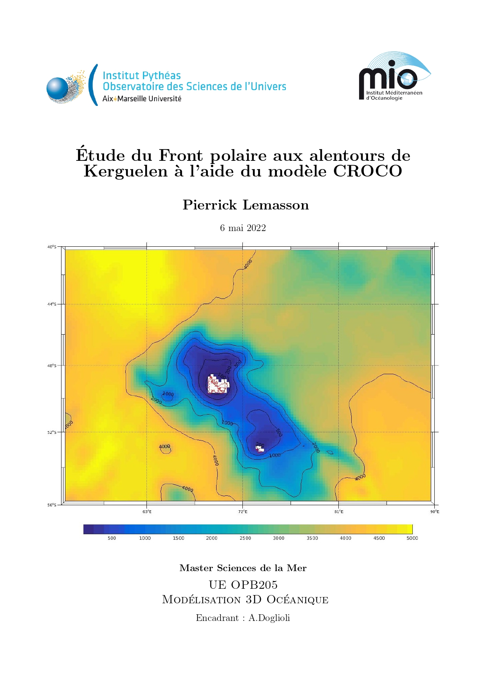

|  |
Résumé
Le plateau des Kerguelen est une région clé de l’Océan Austral, en effet outre l’obstruction du CCA (Courant Circumpolaire Antartique), cette région est marquée par une intensification de production primaire annuelle qui se met en place grâce à des apports de fer. La caractérisation des masses d’eau et fronts de la région est donc necessaire pour mieux comprendre ces événements potentiellement cruciaux pour le climat. Dans ce rapport l’objectif est de modéliser le front polaire au niveau de la région de Kerguelen avec le modèle océanique communautaire CROCO puis de discuter les simulations avec les conclusion de [Park et al., 2014]. Globalement le modèle reste fidèle pour ce qui est des courants de surface (CCA), cependant pour le positionnement du front polaire on constate une dérive vers le Sud-Est de 5-6° vis à vis de [Park et al., 2014]. Cela pourrait s’expliquer par un front polaire potentiellement sub-divisé en plusieurs branches au sud de Kerguelen, ou bien par une dérive du modèle due aux conditions initiales et de frontières dérivées de dataset globaux. Abstract There is a growing interest for the Kerguelen region due to a recurrent climatically important, and annually recurrent phytoplankton spring bloom enhanced by iron transfer. To better understand these process a precise determination of the water masses and fronts are necessary. In this report the obective is to modelling the polar front (PF) aroud the kerguelen archipelago with the ocean community model CROCO in the aim to discuss the simulations with the conclusions of [Park et al., 2014]. We find that overall the model remains faithful in terms of surface currents (CCA), however for the positioning of the polar front there is a drift towards the South-East of 5-6° with respect to [Park et al., 2014]. This could be explained by a polar front potentially subdivided into several branches south of Kerguelen, or is due to initial and boundary conditions derived from global datasets. Téléchargements Rapport.pdf Présentation.pdf |